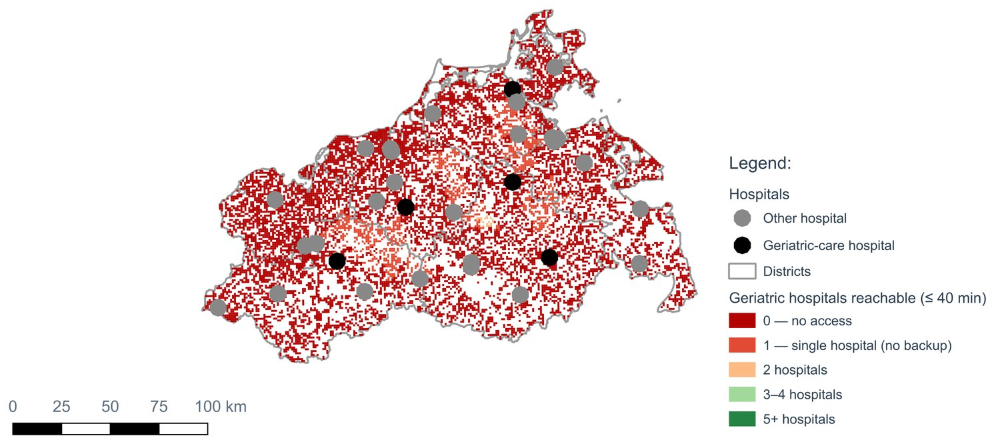
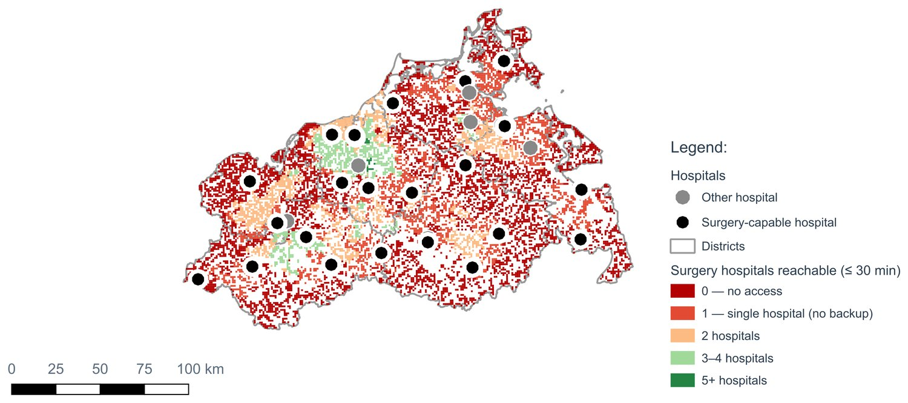
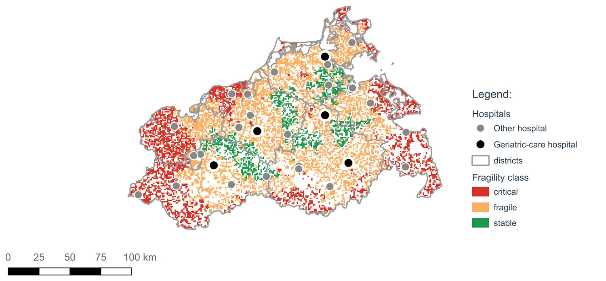
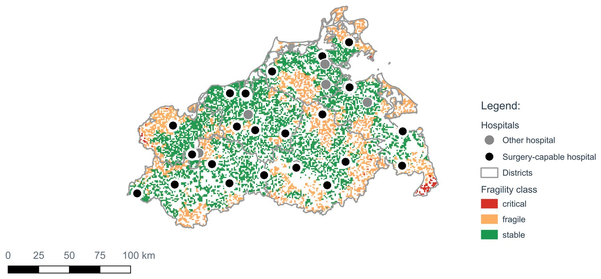
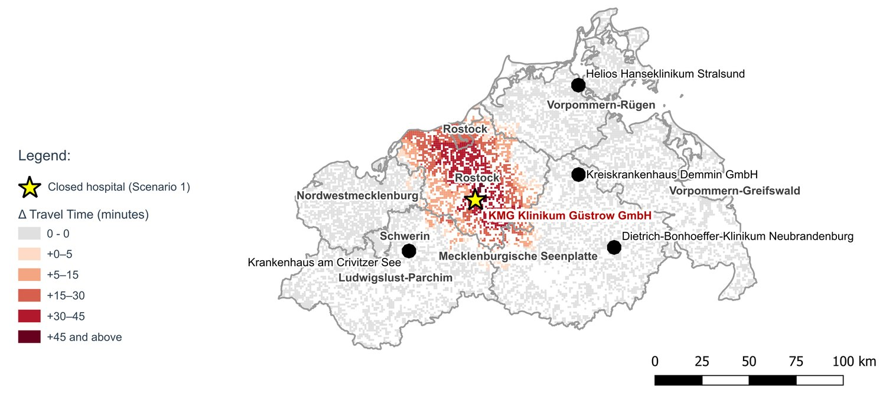
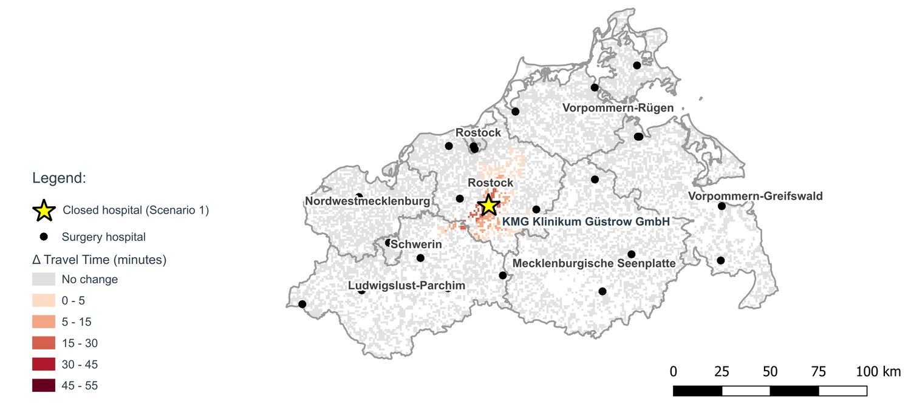
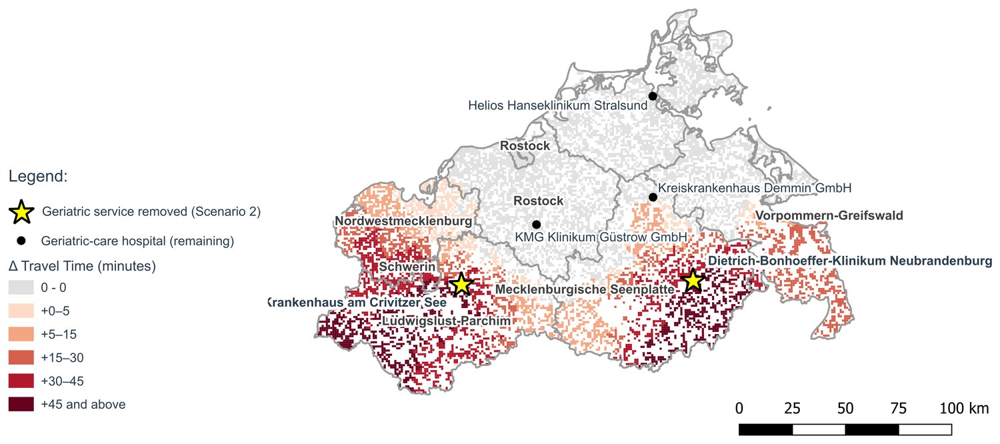
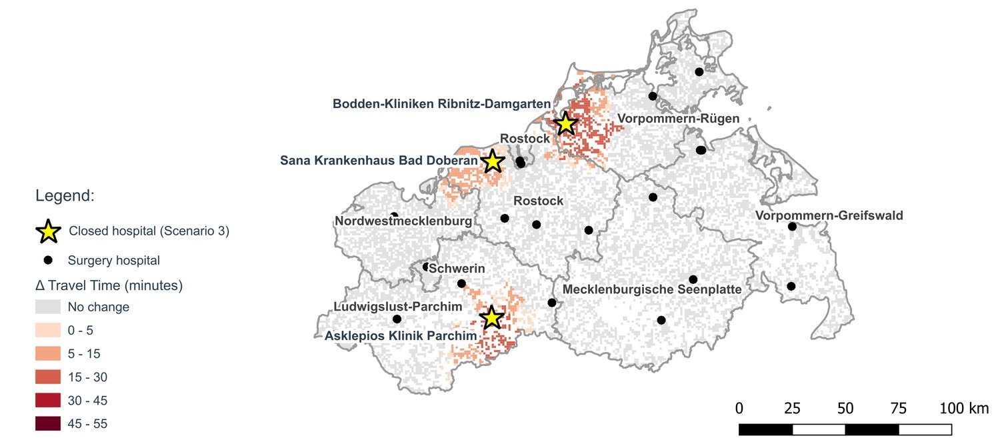
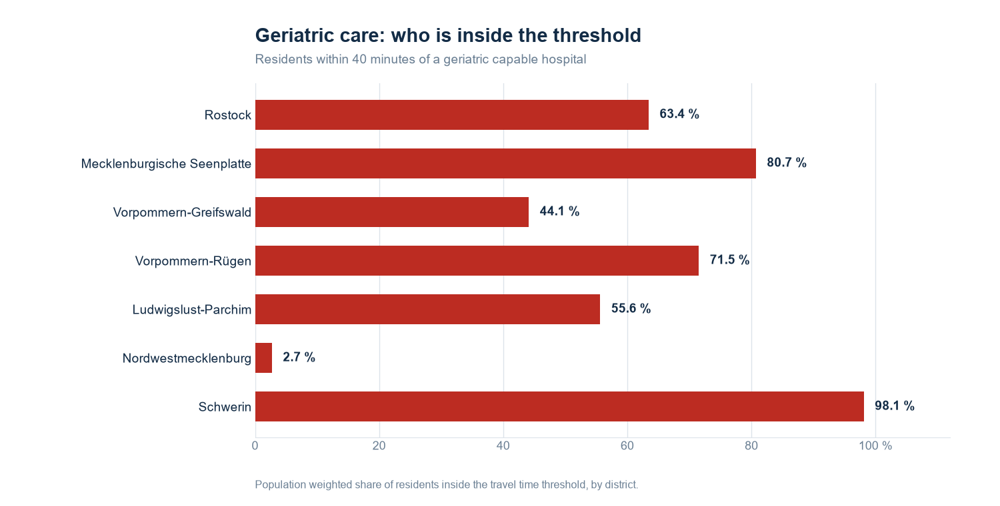
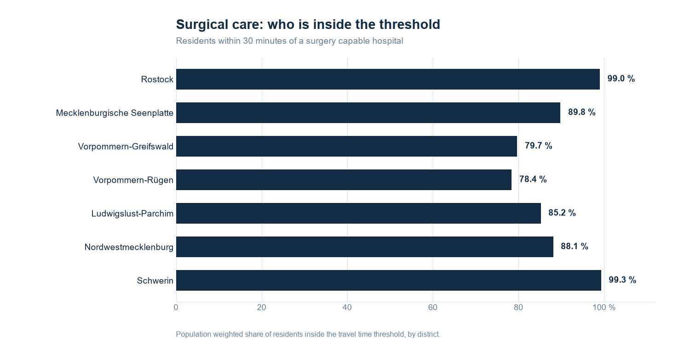

Mecklenburg-Vorpommern, Germany
Germany is concentrating specialist hospital care. A coverage statistic cannot say who that hurts, because it asks how much care sits inside a region, never whether a population has one hospital to fall back on or three. These six pairs ask. Every populated 1 km cell, 1,561,160 residents, routed to every hospital over the road network. Drag any slider.
01 / 06 · Redundancy
Number of service capable hospitals reachable inside the policy threshold, per 1 km cell.


Dark red is a cell that can reach one hospital, or none. Of the population that counts as covered for surgery, 26.2 % depend on a single hospital. For geriatric care it is 90.6 %. A coverage statistic reports both of them as covered.
02 / 06 · Fragility
Per cell fragility class, combining travel time, the penalty to the second nearest provider, threshold breach, and the share of residents aged 65 and over.


Green is stable, orange fragile, red critical. The same state, the same roads, the same population. Only the service changes.
03 / 06 · Scenario 1
KMG Klinikum Güstrow closes. Change in travel time to the nearest remaining provider, per 1 km cell.


The same hospital shuts in both maps. 4,923 residents fall outside the surgical threshold. 247,592 fall outside the geriatric one. One service absorbs the loss. The other does not.
04 / 06 · Scenario 1 against Scenario 2
Geriatric care in both maps. On the left a whole hospital shuts. On the right two hospitals stay open but stop offering the service.

Hospital closesService withdrawnClosing Güstrow outright costs 247,592 residents their geriatric threshold access. Withdrawing only the geriatric department at Crivitz and Neubrandenburg, with both hospitals still open and still treating patients, costs 353,832. The larger loss comes from the smaller intervention.
05 / 06 · Scenario 1 against Scenario 3
Surgical care in both maps. On the left one keystone hospital. On the right three smaller rural hospitals.

One large hospitalThree rural hospitalsClosing KMG Klinikum Güstrow puts 4,923 residents outside the surgical threshold. Closing Bad Doberan, Parchim and Ribnitz, all of them smaller, puts 60,465 outside it: twelve times the loss. And closing the largest hospital in the state, the University Hospital Rostock, costs nobody their threshold access at all.
06 / 06 · The numbers
Population weighted share of residents inside the threshold, by district. Same districts, same axis, same order in both panels.


Surgical coverage never drops below 78.4 % in any district. Geriatric coverage falls to 44.1 % in Vorpommern-Greifswald and 2.7 % in Nordwestmecklenburg. Statewide: 89.1 % surgical, 59.5 % geriatric.
Drag the circle to compare. Arrow keys move the slider, Page Up and Page Down change the pair.